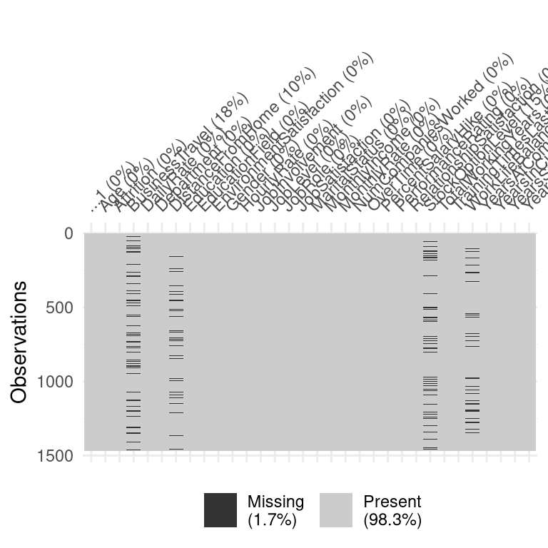

Raw data does not always come in its best shape for analysis. In this opening chapter, you will get a first look at how to transform and create features that enhance your model’s performance and interpretability.
What is feature engineering? - (video)
1.1 A Tentative Model
You are handed a data set with measures of the gravitational force between two bodies at different distances and are challenged to build a simple model to predict such force given a specific distance. Initially, you want to stick to simple linear regression. The data consist of 120 pairs of distance and force, and is loaded for you as newton.
Instructions
Build a linear model for the newton data using the linear model from base R function and assign it to lr_force.
Create a new data frame df by binding the prediction values to the original newton data.
Generate a scatterplot of force versus distance using ggplot().
Add a regression line to the scatterplot with the fitted values.
# Build a linear model for the newton the data and assign it to lr_forcelr_force <-lm(force ~ distance, data = newton)# Create a new data frame by binding the prediction values to the original datadf <- newton %>%bind_cols(lr_pred =predict(lr_force))# Generate a scatterplot of force vs. distancedf %>%ggplot(aes(x = distance, y = force)) +geom_point() +# Add a regression line with the fitted valuesgeom_line(aes(y = lr_pred), color ="blue", lwd = .75) +ggtitle("Linear regression of force vs. distance") +theme_classic()
1.2 Manually engineering a feature
After doing some research with your team, you recall that the gravitational force of attraction between two bodies obeys Newton’s formula: \[F = G\frac{m_1m_2}{r^2}\] You can’t use the formula directly because the masses are unknown, but you can fit a regression model of force as a function of inv_square_distance. The augmented dataset df you built in the previous exercise has been loaded for you.
Instructions
Create a new variable inv_square_distance defined as the reciprocal of the squared distance and add it to the df data frame.
*Build a simple regression model using lm() of force versus inv_square_distance and save it as lr_force_2.
*Bind your predictions to df_inverse.
# Create a new variable inv_square_distancedf_inverse <- df %>%mutate(inv_square_distance =1/distance^2)# Build a simple regression modellr_force_2 <-lm(force ~ inv_square_distance, data = df_inverse)# Bind your predictions to df_inversedf_inverse <- df_inverse %>%bind_cols(lr2_pred =predict(lr_force_2))df_inverse %>%ggplot(aes(x = distance, y = force)) +geom_point() +geom_line(aes(y = lr2_pred), col ="blue", lwd = .75) +ggtitle("Linear regression of force vs. inv_square_distance") +theme_classic()
Creating new features using domain knowledge - (video)
1.3 Setting up your data for analysis
ou will look at a version of the nycflights13 dataset, loaded as flights. It contains information on flights departing from New York City. You are interested in predicting whether or not they will arrive late to their destination, but first, you need to set up the data for analysis.
After discussing our model goals with a team of experts, you selected the following variables for your model: flight, sched_dep_time, dep_delay, sched_arr_time, carrier, origin, dest, distance, date, arrival.
You will also mutate() the date using as.Date() and convert character type variables to factors.
Lastly, you will split the data into train and test datasets.
Instructions
Transform all character-type variables to factors.
# Split the flights data into test and train setsset.seed(246)split <- flights %>%initial_split(prop =3/4, strata = arrival)test <-testing(split)train <-training(split)test %>%select(arrival) %>%table() %>%prop.table()
With your data ready for analysis, you will declare a logistic_model() to predict whether or not they will arrive late.
You assign the role of “ID” to the flight variable to keep it as a reference for analysis and debugging. From the date variable, you will create new features to explicitly model the effect of holidays and represent factors as dummy variables.
Bundling your model and recipe() together using workflow() will help ensure that subsequent fittings or predictions will implement consistent feature engineering steps.
Instructions
Assign an “ID” role to flight.
Bundle the model and the recipe into a workflow object.
Fit lr_workflow to the test data.
Tidy the fitted workflow.
lr_model <-logistic_reg() %>%set_engine("glm") %>%set_mode("classification")# Assign an "ID" role to flightlr_recipe <-recipe(arrival ~., data = train) %>%update_role(flight, new_role ="ID") %>%step_holiday(date, holidays = timeDate::listHolidays("US")) %>%step_dummy(all_nominal_predictors())# Bundle the model and the recipe into a workflow objectlr_workflow <-workflow() %>%add_model(lr_model) %>%add_recipe(lr_recipe)lr_workflow
Increasing the information content of raw data -(video)
1.5 Identifying missing values
Attrition is a critical issue for corporations, as losing an employee implies not only the cost of recruiting and training a new one, but constitutes a loss in tacit knowledge and culture that is hard to recover.
The attrition dataset has information on employee attrition including Age, WorkLifeBalance, DistanceFromHome, StockOptionLevel, and 27 others. Before continuing with your analysis, you want to detect any missing variables.
The package naniar and the attrition dataset are already loaded for you.
Explore missing data visually to identify missing values on the attrition data.
# Explore missing data on the attrition datasetvis_miss(attrition)

Select the variables with missing values and visualize only those.
# Select the variables with missing values and rerun the analysis on those variables.attrition %>%select("BusinessTravel", "DistanceFromHome","StockOptionLevel", "WorkLifeBalance") %>%vis_miss()
1.6 Imputing missing values and creating dummy variables
After detecting missing values in the attrition dataset and determining that they are missing completely at random (MCAR), you decide to use K Nearest Neighbors (KNN) imputation. While configuring your feature engineering recipe, you decide to create dummy variables for all your nominal variables and update the role of the ...1 variable to “ID” so you can keep it in the dataset for reference, without affecting your model.
Instructions
Update the role of ...1 to “ID”.
Impute values to all predictors where data are missing.
Create dummy variables for all nominal predictors.
r_model <-logistic_reg()lr_recipe <-recipe(Attrition ~., data = train) %>%# Update the role of "...1" to "ID"update_role(...1, new_role ="ID" ) %>%# Impute values to all predictors where data are missingstep_impute_knn(all_nominal_predictors()) %>%# Create dummy variables for all nominal predictorsstep_dummy(all_nominal_predictors())lr_recipe
1.7 Fitting and assessing the model
Now that you have addressed missing values and created dummy variables, it is time to assess your model’s performance!
The attrition dataset, along with the test and train splits, the lr_recipe and your declared logistic_model() are all loaded for you.
Instructions
Bundle model and recipe in workflow.
Fit workflow to the train data.
Generate an augmented data frame for performance assessment.
# Bundle model and recipe in workflowlr_workflow <-workflow() %>%add_model(lr_model) %>%add_recipe(lr_recipe)# Fit workflow to the train datalr_fit <-fit(lr_workflow, data = train)# Generate an augmented data frame for performance assessmentlr_aug <- lr_fit %>%augment(test)lr_aug %>%roc_curve(truth = Attrition, .pred_No) %>%autoplot()
You just got a job at a hospitality research company, and your first task is to build a model that predicts whether or not a hotel stay will include children. To train your model, you will rely on a modified version of the hotel booking demands dataset by Antonio, Almeida, and Nunes (2019). You are restricting your data to the following features:
features <-c('adults', 'children', 'meal','reserved_room_type', 'customer_type', 'arrival_date')
The data has been loaded for you as hotels, along with its corresponding test and train splits, and the model has been declared as lr_model <- logistic_reg().
You will assess model performance by accuracy and area under the ROC curve or AUC.
##Instructions {-}
Generate “day of the week”, “week” and “month” features.
Create dummy variables for all nominal predictors.
lr_recipe <-recipe(children ~., data = train) %>%# Generate "day of the week", "week" and "month" featuresstep_date(arrival_date, features =c("dow", "week", "month")) %>%# Create dummy variables for all nominal predictorsstep_dummy(all_nominal_predictors())
Bundle your model and recipe in a workflow().
Fit the workflow to the training data.
# Bundle your model and recipe in a workflowlr_workflow <-workflow() %>%add_model(lr_model) %>%add_recipe(lr_recipe)# Fit the workflow to the training datalr_fit <- lr_workflow %>%fit(data = train)lr_aug <- lr_fit %>%augment(test)bind_rows(roc_auc(lr_aug,truth = children, .pred_children),accuracy(lr_aug,truth = children, .pred_class))